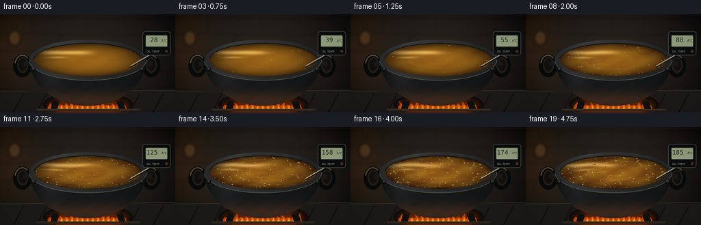
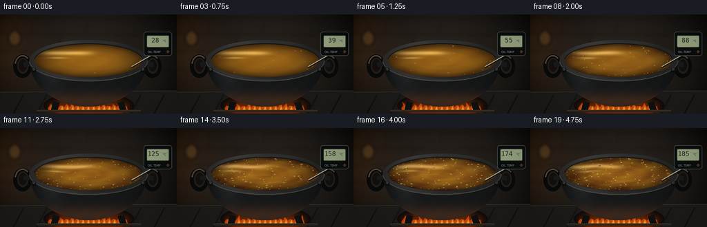
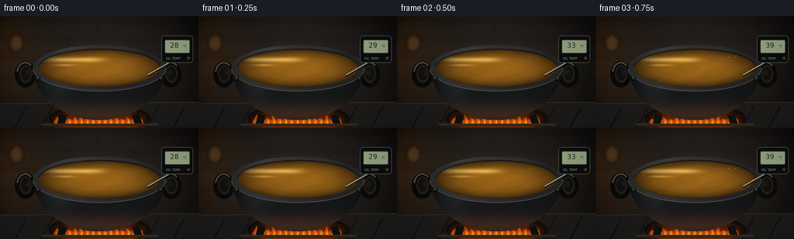

CODING AGENTS AS PIXEL WORLD MODELS
traex/GPT-6.1-Sol · phygen_110
点击播放 · 原生 RGB 像素
逐轮保存的候选
回放视频、检查图与代码变化。
每份候选均可单独播放。实际图片检查记录在下方工具轨迹中。
候选 01播放与检查图
点击播放 · 原生 RGB 像素

展开代码变化
--- 上一保存版本
+++ 本次保存版本
@@ -0,0 +1,228 @@
+"""Text-only procedural RGB timelapse: hot oil in an iron cauldron."""
+from pathlib import Path
+import numpy as np
+from PIL import Image, ImageDraw, ImageFilter, ImageFont
+import math
+import artifact_io
+
+ROOT = Path(__file__).resolve().parent
+W,H,S = 256,144,3
+SW,SH=W*S,H*S
+rng=np.random.default_rng(110)
+y,x=np.mgrid[0:SH,0:SW].astype(float)/S
+noise=rng.normal(0,1,(SH,SW))
+
+def rgba(): return Image.new('RGBA',(SW,SH),(0,0,0,0))
+def ell(d,box,fill,outline=None,width=1):
+ d.ellipse(tuple(v*S for v in box),fill=fill,outline=outline,width=max(1,round(width*S)))
+def line(d,pts,fill,width=1):
+ d.line([(a*S,b*S) for a,b in pts],fill=fill,width=max(1,round(width*S)),joint='curve')
+def poly(d,pts,fill): d.polygon([(a*S,b*S) for a,b in pts],fill=fill)
+def blur(im,r): return im.filter(ImageFilter.GaussianBlur(r*S))
+def rgbarr(a): return Image.fromarray(np.uint8(np.clip(a,0,255)),'RGB')
+def blend(base,arr,mask):
+ base.paste(rgbarr(arr), (0,0), mask)
+def mkel(box):
+ m=Image.new('L',(SW,SH));ImageDraw.Draw(m).ellipse(tuple(v*S for v in box),fill=255);return m
+
+# A dark, softly defocused kitchen remains static throughout the shot.
+bg=np.zeros((SH,SW,3),float)
+vig=np.clip(1-((x-124)/170)**2-((y-67)/130)**2,.1,1)
+for k,c in enumerate([37,31,26]): bg[:,:,k]=c*vig+5+noise*.6
+bg[:,:,0]+=24*np.exp(-((x-8)/41)**2-((y-47)/70)**2)
+bg[:,:,1]+=11*np.exp(-((x-8)/41)**2-((y-47)/70)**2)
+background=rgbarr(bg).convert('RGBA')
+wall=rgba();d=ImageDraw.Draw(wall)
+for yy in [4,28,53,79]:
+ line(d,[(0,yy),(256,yy+3)],(8,8,8,100),1.6)
+ for xx in ([-22,47,126,211] if yy in [4,53] else [13,87,169,244]):
+ line(d,[(xx,yy),(xx-1,yy+24)],(8,8,8,90),1)
+# Out-of-focus copper utensil at the left edge.
+line(d,[(21,-2),(22,33)],(101,67,38,130),2)
+ell(d,(12,24,30,46),(79,53,29,180));ell(d,(16,26,27,41),(132,91,43,95))
+background.alpha_composite(blur(wall,2.2))
+# Stove surface and firebox.
+stove=rgba();d=ImageDraw.Draw(stove)
+poly(d,[(0,112),(256,110),(256,144),(0,144)],(29,28,26,255))
+line(d,[(0,113),(256,111)],(65,57,46,220),1)
+for xx in [0,34,68,102,136,170,204,238]:
+ line(d,[(xx,116),(xx-15,144)],(15,16,16,160),2)
+ell(d,(63,113,194,151),(9,10,10,255))
+background.alpha_composite(stove)
+
+# Textured iron cauldron, with geometric shading rather than a flat fill.
+body_mask=Image.new('L',(SW,SH));d=ImageDraw.Draw(body_mask)
+bodypts=[]
+# Rounded bottom and sides of the cast iron vessel.
+for th in np.linspace(0,np.pi,180):
+ bodypts.append((128+85*np.cos(th),67+67*np.sin(th)))
+ImageDraw.Draw(body_mask).polygon([(a*S,b*S) for a,b in bodypts],fill=255)
+body=np.zeros((SH,SW,3),float)
+side=np.sqrt(np.maximum(0,1-((x-128)/86)**2))
+key=np.exp(-((x-73)/19)**2)*np.clip((132-y)/70,0,1)
+warm=np.exp(-((y-127)/13)**2)
+fine=noise*1.3 + 1.1*np.sin(x*2.7+y*3.3)+.5*np.cos(x*5.9-y*1.4)
+for k,(c,light,fire) in enumerate([(13,21,38),(15,22,16),(16,23,4)]):
+ body[:,:,k]=c+10*side+light*key+fine+fire*warm
+# Tiny worn casting marks.
+body[:,:,0]+=2.2*np.sin(x*.23+y*.35)
+bodyim=rgbarr(body)
+
+# Ring geometry. Outer cast lip and reflective bronze-colored oil meniscus.
+cx,cy,rx,ry=128,67,78,24
+q=((x-cx)/rx)**2+((y-cy)/ry)**2
+oilmask=mkel((cx-rx,cy-ry,cx+rx,cy+ry))
+outer=((x-cx)/86)**2+((y-cy)/30)**2
+ringmask=Image.fromarray(np.uint8((outer<=1)&(q>=1))*255)
+ring=np.zeros((SH,SW,3))
+ringkey=15*np.exp(-((x-79)/35)**2)+10*np.exp(-((y-40)/5)**2)
+for k,c in enumerate([36,37,36]):ring[:,:,k]=c+ringkey+noise*1.2
+# The foreground lip has a cool bright, worn crest.
+ring[:,:,0]+=6*np.exp(-((y-95)/2)**2)
+ring[:,:,1]+=7*np.exp(-((y-95)/2)**2)
+ring[:,:,2]+=8*np.exp(-((y-95)/2)**2)
+
+# Persistent positions and independent phases keep the surface coherent.
+bubbles=[]
+for i in range(150):
+ a=rng.uniform(0,2*np.pi); rr=np.sqrt(rng.uniform(.02,.93))
+ bx=cx+rx*rr*np.cos(a); by=cy+ry*rr*np.sin(a)
+ bubbles.append((bx,by,rng.uniform(.6,2.25),rng.random(),rng.uniform(.15,.34),rng.random()))
+font=ImageFont.truetype('/usr/share/fonts/truetype/dejavu/DejaVuSansMono.ttf',9*S)
+small=ImageFont.truetype('/usr/share/fonts/truetype/dejavu/DejaVuSans.ttf',4*S)
+
+
+def render(i):
+ t=i/19
+ heat=t*t*(3-2*t)
+ temp=round(28+157*heat)
+ im=background.copy()
+ # Ember glow and small licking gas/wood flames, seen under the cauldron.
+ glow=rgba(); gd=ImageDraw.Draw(glow)
+ ell(gd,(64,119,193,149),(239,78,6,110))
+ im.alpha_composite(blur(glow,6))
+ fire=rgba();fd=ImageDraw.Draw(fire)
+ for j in range(15):
+ bx=74+j*7.6
+ hh=8+7*(.5+.5*np.sin(i*1.63+j*2.1))
+ pts=[(bx-4,141),(bx-5,136),(bx-2,132),(bx-1+3*np.sin(i*.9+j),141-hh),
+ (bx+3,133),(bx+5,139),(bx+3,142)]
+ poly(fd,pts,(223,79,10,225))
+ poly(fd,[(bx-2,140),(bx,136),(bx+1,133),(bx+3,140)],(255,178,44,240))
+ im.alpha_composite(blur(fire,.45))
+ # Handles sit behind the body; paired thick, rough iron loops.
+ handles=rgba();hd=ImageDraw.Draw(handles)
+ for xx,sidehandle in [(34,-1),(222,1)]:
+ ell(hd,(xx-15,58,xx+12,92),(9,10,10,255))
+ ell(hd,(xx-9,63,xx+7,86),(37,31,24,255))
+ ell(hd,(xx-7,65,xx+5,83),(19,17,14,255))
+ # Worn light catches the upper arc of the handle.
+ hd.arc(tuple(v*S for v in (xx-13,59,xx+10,89)),190,315,fill=(83,73,55,255),width=2*S)
+ line(hd,[(xx,73),(52 if sidehandle<0 else 204,71)],(25,26,25,255),7)
+ im.alpha_composite(handles)
+ im.paste(bodyim,(0,0),body_mask)
+ # Warm oil: transparent amber depths, reflective fluid gradients and ripples.
+ r=np.sqrt(q)
+ tt=i*.28
+ wav=(np.sin((x-128)*.12+y*.27+tt*1.1)+
+ .7*np.cos(x*.057-y*.21-tt*.9)+
+ .45*np.sin(r*25-tt*3))
+ amp=1.8+6.5*heat
+ oil=np.zeros((SH,SW,3),float)
+ depth=np.clip(1-r**3,0,1)
+ for k,(edge,center) in enumerate([(64,152),(40,100),(12,25)]):
+ oil[:,:,k]=edge+(center-edge)*depth+wav*amp*(1 if k<2 else .24)
+ oil[:,:,0]-=heat*8; oil[:,:,1]-=heat*8
+ # Large elongated window reflection drifting as convection bends the surface.
+ xw=x + heat*2.9*np.sin(y*.27+tt)
+ yw=y + heat*.9*np.sin(x*.09-tt*1.4)
+ refl=np.exp(-((xw-97)/36)**4-((yw-56)/3.0)**2)
+ refl2=np.exp(-((xw-83)/14)**2-((yw-63)/1.4)**2)
+ for k,factor in enumerate([91,87,60]): oil[:,:,k]+=refl*factor+refl2*factor*.65
+ # Finer strands reveal moving convection without looking like solid objects.
+ thin=np.maximum(0,np.sin(x*.055+y*.43+wav*.45+tt*.8)-.91)*9*heat
+ oil[:,:,0]+=thin*11;oil[:,:,1]+=thin*8;oil[:,:,2]+=thin*3
+ oil += noise[:,:,None]*.35
+ blend(im,oil,oilmask)
+ # Swelling bubbles, bursting rings, and a scattering of tiny edge bubbles.
+ bub=rgba();bd=ImageDraw.Draw(bub)
+ for bx,by,size,phase,speed,activation in bubbles:
+ if activation > .035+.92*heat: continue
+ life=(phase+i*speed)%1
+ opacity=int(105+105*heat)
+ if life<.59:
+ rad=size*(.25+1.1*life)
+ rad*=.7+.5*heat
+ radY=rad*.43
+ ell(bd,(bx-rad,by-radY,bx+rad,by+radY),(68,43,8,opacity),(205,145,42,opacity),.30)
+ bd.arc(tuple(v*S for v in (bx-rad,by-radY,bx+rad,by+radY)),190,315,fill=(255,224,148,opacity),width=1)
+ ell(bd,(bx-rad*.4,by-radY*.67,bx,by-radY*.12),(255,224,153,min(240,opacity+20)))
+ else:
+ rad=size*(1+(life-.59)*4)
+ bd.arc(tuple(v*S for v in (bx-rad,by-rad*.40,bx+rad,by+rad*.40)),0,340,
+ fill=(218,153,48,int((1-life)*170*heat)),width=1)
+ # Perimeter carries small foam-like beads, not a white water boil.
+ for j in range(round(2+24*heat)):
+ a=2*np.pi*(j/29)+.04*np.sin(i*.7+j)
+ bx=cx+rx*.96*np.cos(a);by=cy+ry*.93*np.sin(a)
+ rr=.50+.2*np.sin(i+j)
+ ell(bd,(bx-rr,by-rr*.46,bx+rr,by+rr*.46),(214,159,62,150))
+ bub.putalpha(Image.fromarray(np.minimum(np.array(bub.getchannel('A')),np.array(oilmask))))
+ im.alpha_composite(bub)
+ blend(im,ring,ringmask)
+ edge=rgba();ed=ImageDraw.Draw(edge)
+ ed.arc(tuple(v*S for v in (42,37,214,97)),0,177,fill=(88,84,70,220),width=1*S)
+ ed.arc(tuple(v*S for v in (49,42,207,92)),185,349,fill=(12,14,13,235),width=1*S)
+ # Iron attachment rivets in the foreground.
+ for bx in [49,207]:
+ ell(ed,(bx-3,77,bx+3,84),(12,14,14,255))
+ ell(ed,(bx-1.8,77.5,bx+1.8,81.4),(54,54,49,255))
+ im.alpha_composite(edge)
+ # Wispy vapor and a subtle transparent heat haze once the oil gets hot.
+ if heat>.34:
+ vapor=rgba();vd=ImageDraw.Draw(vapor)
+ strength=(heat-.34)/.66
+ for j in range(6):
+ bx=72+j*21
+ pts=[]
+ for v in np.linspace(0,1,65):
+ yy=64-v*(23+8*np.sin(j+tt*.24))
+ xx=bx+4*np.sin(v*5+tt*.8+j)*v+4*v*v
+ pts.append((xx,yy))
+ line(vd,pts,(188,179,153,int(19*strength)),2+j%2)
+ im.alpha_composite(blur(vapor,1.8))
+ # A real cooking thermometer supplies an unambiguous temperature cue.
+ probe=rgba();pd=ImageDraw.Draw(probe)
+ line(pd,[(223,58),(190,77)],(16,17,16,230),2.4)
+ line(pd,[(223,57),(190,76)],(157,158,139,255),1.5)
+ line(pd,[(222,56.8),(191,75)],(232,224,190,255),.45)
+ # Rubber bezel and grey LCD, mounted at the upper right of the vessel.
+ pd.rounded_rectangle((208*S,25*S,249*S,60*S),radius=4*S,fill=(10,13,14,255),outline=(70,71,64,255),width=1*S)
+ pd.rounded_rectangle((212*S,30*S,245*S,48*S),radius=2*S,fill=(153,165,131,255),outline=(36,42,34,255),width=1*S)
+ read=f'{temp:3d}'
+ pd.text((214*S,32*S),read,font=font,fill=(25,35,25,255))
+ pd.text((236*S,36*S),'°C',font=small,fill=(25,35,25,255))
+ pd.text((214*S,52*S),'OIL TEMP',font=small,fill=(157,158,143,255))
+ ell(pd,(241,52,245,56),(85,48,27,255))
+ im.alpha_composite(probe)
+ # Feet and stove grate remain sharp at the bottom edge.
+ fg=rgba();fd=ImageDraw.Draw(fg)
+ poly(fd,[(77,126),(86,128),(83,141),(73,141)],(16,17,17,255))
+ poly(fd,[(170,128),(179,126),(184,141),(174,141)],(16,17,17,255))
+ line(fd,[(53,140),(204,140)],(45,40,32,255),3)
+ line(fd,[(53,139),(204,139)],(73,61,44,255),.5)
+ im.alpha_composite(fg)
+ # Filmic vignette and antialiasing.
+ out=np.asarray(im.convert('RGB'),float)
+ vign=np.clip(1-.15*((x-130)/145)**2-.13*((y-73)/95)**2,.69,1)
+ out*=vign[:,:,None]
+ return np.asarray(rgbarr(out).resize((W,H),Image.Resampling.LANCZOS),dtype=np.uint8)
+
+
+def main():
+ frames=np.stack([render(i) for i in range(20)])
+ artifact_io.save(frames,ROOT)
+ print('Saved',frames.shape,frames.dtype,'to',ROOT)
+ print('Temperatures:',[round(28+157*(t*t*(3-2*t))) for t in np.linspace(0,1,20)])
+
+if __name__=='__main__': main()
候选 02播放与检查图
点击播放 · 原生 RGB 像素


展开代码变化
--- 上一保存版本
+++ 本次保存版本
@@ -201,7 +201,7 @@
pd.rounded_rectangle((212*S,30*S,245*S,48*S),radius=2*S,fill=(153,165,131,255),outline=(36,42,34,255),width=1*S)
read=f'{temp:3d}'
pd.text((214*S,32*S),read,font=font,fill=(25,35,25,255))
- pd.text((236*S,36*S),'°C',font=small,fill=(25,35,25,255))
+ pd.text((236*S,36*S),'\u00b0C',font=small,fill=(25,35,25,255))
pd.text((214*S,52*S),'OIL TEMP',font=small,fill=(157,158,143,255))
ell(pd,(241,52,245,56),(85,48,27,255))
im.alpha_composite(probe)
可观测工具轨迹
实际执行的命令与返回图片。
命令 1exit 0
/bin/bash -lc "ls -la && cat prompt.txt && printf '\\n---RULES---\\n' && cat GENERATION_RULES.md && printf '\\n---SPEC---\\n' && cat task_spec.json"
命令 2exit 0
/bin/bash -lc 'cat artifact_io.py'
命令 3exit 0
/bin/bash -lc "fc-list | head -8 && python - <<'PY'
import PIL,numpy
print('libraries ready')
PY"命令 4exit 0
/bin/bash -lc "cat > generate.py <<'PY'
\"\"\"Text-only procedural RGB timelapse: hot oil in an iron cauldron.\"\"\"
from pathlib import Path
import numpy as np
from PIL import Image, ImageDraw, ImageFilter, ImageFont
import math
import artifact_io
ROOT = Path(__file__).resolve().parent
W,H,S = 256,144,3
SW,SH=W*S,H*S
rng=np.random.default_rng(110)
y,x=np.mgrid[0:SH,0:SW].astype(float)/S
noise=rng.normal(0,1,(SH,SW))
def rgba(): return Image.new('RGBA',(SW,SH),(0,0,0,0))
def ell(d,box,fill,outline=None,width=1):
d.ellipse(tuple(v*S for v in box),fill=fill,outline=outline,width=max(1,round(width*S)))
def line(d,pts,fill,width=1):
d.line([(a*S,b*S) for a,b in pts],fill=fill,width=max(1,round(width*S)),joint='curve')
def poly(d,pts,fill): d.polygon([(a*S,b*S) for a,b in pts],fill=fill)
def blur(im,r): return im.filter(ImageFilter.GaussianBlur(r*S))
def rgbarr(a): return Image.fromarray(np.uint8(np.clip(a,0,255)),'RGB')
def blend(base,arr,mask):
base.paste(rgbarr(arr), (0,0), mask)
def mkel(box):
m=Image.new('L',(SW,SH));ImageDraw.Draw(m).ellipse(tuple(v*S for v in box),fill=255);return m
# A dark, softly defocused kitchen remains static throughout the shot.
bg=np.zeros((SH,SW,3),float)
vig=np.clip(1-((x-124)/170)**2-((y-67)/130)**2,.1,1)
for k,c in enumerate([37,31,26]): bg[:,:,k]=c*vig+5+noise*.6
bg[:,:,0]+=24*np.exp(-((x-8)/41)**2-((y-47)/70)**2)
bg[:,:,1]+=11*np.exp(-((x-8)/41)**2-((y-47)/70)**2)
background=rgbarr(bg).convert('RGBA')
wall=rgba();d=ImageDraw.Draw(wall)
for yy in [4,28,53,79]:
line(d,[(0,yy),(256,yy+3)],(8,8,8,100),1.6)
for xx in ([-22,47,126,211] if yy in [4,53] else [13,87,169,244]):
line(d,[(xx,yy),(xx-1,yy+24)],(8,8,8,90),1)
# Out-of-focus copper utensil at the left edge.
line(d,[(21,-2),(22,33)],(101,67,38,130),2)
ell(d,(12,24,30,46),(79,53,29,180));ell(d,(16,26,27,41),(132,91,43,95))
background.alpha_composite(blur(wall,2.2))
# Stove surface and firebox.
stove=rgba();d=ImageDraw.Draw(stove)
poly(d,[(0,112),(256,110),(256,144),(0,144)],(29,28,26,255))
line(d,[(0,113),(256,111)],(65,57,46,220),1)
for xx in [0,34,68,102,136,170,204,238]:
line(d,[(xx,116),(xx-15,144)],(15,16,16,160),2)
ell(d,(63,113,194,151),(9,10,10,255))
background.alpha_composite(stove)
# Textured iron cauldron, with geometric shading rather than a flat fill.
body_mask=Image.new('L',(SW,SH));d=ImageDraw.Draw(body_mask)
bodypts=[]
# Rounded bottom and sides of the cast iron vessel.
for th in np.linspace(0,np.pi,180):
bodypts.append((128+85*np.cos(th),67+67*np.sin(th)))
ImageDraw.Draw(body_mask).polygon([(a*S,b*S) for a,b in bodypts],fill=255)
body=np.zeros((SH,SW,3),float)
side=np.sqrt(np.maximum(0,1-((x-128)/86)**2))
key=np.exp(-((x-73)/19)**2)*np.clip((132-y)/70,0,1)
warm=np.exp(-((y-127)/13)**2)
fine=noise*1.3 + 1.1*np.sin(x*2.7+y*3.3)+.5*np.cos(x*5.9-y*1.4)
for k,(c,light,fire) in enumerate([(13,21,38),(15,22,16),(16,23,4)]):
body[:,:,k]=c+10*side+light*key+fine+fire*warm
# Tiny worn casting marks.
body[:,:,0]+=2.2*np.sin(x*.23+y*.35)
bodyim=rgbarr(body)
# Ring geometry. Outer cast lip and reflective bronze-colored oil meniscus.
cx,cy,rx,ry=128,67,78,24
q=((x-cx)/rx)**2+((y-cy)/ry)**2
oilmask=mkel((cx-rx,cy-ry,cx+rx,cy+ry))
outer=((x-cx)/86)**2+((y-cy)/30)**2
ringmask=Image.fromarray(np.uint8((outer<=1)&(q>=1))*255)
ring=np.zeros((SH,SW,3))
ringkey=15*np.exp(-((x-79)/35)**2)+10*np.exp(-((y-40)/5)**2)
for k,c in enumerate([36,37,36]):ring[:,:,k]=c+ringkey+noise*1.2
# The foreground lip has a cool bright, worn crest.
ring[:,:,0]+=6*np.exp(-((y-95)/2)**2)
ring[:,:,1]+=7*np.exp(-((y-95)/2)**2)
ring[:,:,2]+=8*np.exp(-((y-95)/2)**2)
# Persistent positions and independent phases keep the surface coherent.
bubbles=[]
for i in range(150):
a=rng.uniform(0,2*np.pi); rr=np.sqrt(rng.uniform(.02,.93))
bx=cx+rx*rr*np.cos(a); by=cy+ry*rr*np.sin(a)
bubbles.append((bx,by,rng.uniform(.6,2.25),rng.random(),rng.uniform(.15,.34),rng.random()))
font=ImageFont.truetype('/usr/share/fonts/truetype/dejavu/DejaVuSansMono.ttf',9*S)
small=ImageFont.truetype('/usr/share/fonts/truetype/dejavu/DejaVuSans.ttf',4*S)
def render(i):
t=i/19
heat=t*t*(3-2*t)
temp=round(28+157*heat)
im=background.copy()
# Ember glow and small licking gas/wood flames, seen under the cauldron.
glow=rgba(); gd=ImageDraw.Draw(glow)
ell(gd,(64,119,193,149),(239,78,6,110))
im.alpha_composite(blur(glow,6))
fire=rgba();fd=ImageDraw.Draw(fire)
for j in range(15):
bx=74+j*7.6
hh=8+7*(.5+.5*np.sin(i*1.63+j*2.1))
pts=[(bx-4,141),(bx-5,136),(bx-2,132),(bx-1+3*np.sin(i*.9+j),141-hh),
(bx+3,133),(bx+5,139),(bx+3,142)]
poly(fd,pts,(223,79,10,225))
poly(fd,[(bx-2,140),(bx,136),(bx+1,133),(bx+3,140)],(255,178,44,240))
im.alpha_composite(blur(fire,.45))
# Handles sit behind the body; paired thick, rough iron loops.
handles=rgba();hd=ImageDraw.Draw(handles)
for xx,sidehandle in [(34,-1),(222,1)]:
ell(hd,(xx-15,58,xx+12,92),(9,10,10,255))
ell(hd,(xx-9,63,xx+7,86),(37,31,24,255))
ell(hd,(xx-7,65,xx+5,83),(19,17,14,255))
# Worn light catches the upper arc of the handle.
hd.arc(tuple(v*S for v in (xx-13,59,xx+10,89)),190,315,fill=(83,73,55,255),width=2*S)
line(hd,[(xx,73),(52 if sidehandle<0 else 204,71)],(25,26,25,255),7)
im.alpha_composite(handles)
im.paste(bodyim,(0,0),body_mask)
# Warm oil: transparent amber depths, reflective fluid gradients and ripples.
r=np.sqrt(q)
tt=i*.28
wav=(np.sin((x-128)*.12+y*.27+tt*1.1)+
.7*np.cos(x*.057-y*.21-tt*.9)+
.45*np.sin(r*25-tt*3))
amp=1.8+6.5*heat
oil=np.zeros((SH,SW,3),float)
depth=np.clip(1-r**3,0,1)
for k,(edge,center) in enumerate([(64,152),(40,100),(12,25)]):
oil[:,:,k]=edge+(center-edge)*depth+wav*amp*(1 if k<2 else .24)
oil[:,:,0]-=heat*8; oil[:,:,1]-=heat*8
# Large elongated window reflection drifting as convection bends the surface.
xw=x + heat*2.9*np.sin(y*.27+tt)
yw=y + heat*.9*np.sin(x*.09-tt*1.4)
refl=np.exp(-((xw-97)/36)**4-((yw-56)/3.0)**2)
refl2=np.exp(-((xw-83)/14)**2-((yw-63)/1.4)**2)
for k,factor in enumerate([91,87,60]): oil[:,:,k]+=refl*factor+refl2*factor*.65
# Finer strands reveal moving convection without looking like solid objects.
thin=np.maximum(0,np.sin(x*.055+y*.43+wav*.45+tt*.8)-.91)*9*heat
oil[:,:,0]+=thin*11;oil[:,:,1]+=thin*8;oil[:,:,2]+=thin*3
oil += noise[:,:,None]*.35
blend(im,oil,oilmask)
# Swelling bubbles, bursting rings, and a scattering of tiny edge bubbles.
bub=rgba();bd=ImageDraw.Draw(bub)
for bx,by,size,phase,speed,activation in bubbles:
if activation > .035+.92*heat: continue
life=(phase+i*speed)%1
opacity=int(105+105*heat)
if life<.59:
rad=size*(.25+1.1*life)
rad*=.7+.5*heat
radY=rad*.43
ell(bd,(bx-rad,by-radY,bx+rad,by+radY),(68,43,8,opacity),(205,145,42,opacity),.30)
bd.arc(tuple(v*S for v in (bx-rad,by-radY,bx+rad,by+radY)),190,315,fill=(255,224,148,opacity),width=1)
ell(bd,(bx-rad*.4,by-radY*.67,bx,by-radY*.12),(255,224,153,min(240,opacity+20)))
else:
rad=size*(1+(life-.59)*4)
bd.arc(tuple(v*S for v in (bx-rad,by-rad*.40,bx+rad,by+rad*.40)),0,340,
fill=(218,153,48,int((1-life)*170*heat)),width=1)
# Perimeter carries small foam-like beads, not a white water boil.
for j in range(round(2+24*heat)):
a=2*np.pi*(j/29)+.04*np.sin(i*.7+j)
bx=cx+rx*.96*np.cos(a);by=cy+ry*.93*np.sin(a)
rr=.50+.2*np.sin(i+j)
ell(bd,(bx-rr,by-rr*.46,bx+rr,by+rr*.46),(214,159,62,150))
bub.putalpha(Image.fromarray(np.minimum(np.array(bub.getchannel('A')),np.array(oilmask))))
im.alpha_composite(bub)
blend(im,ring,ringmask)
edge=rgba();ed=ImageDraw.Draw(edge)
ed.arc(tuple(v*S for v in (42,37,214,97)),0,177,fill=(88,84,70,220),width=1*S)
ed.arc(tuple(v*S for v in (49,42,207,92)),185,349,fill=(12,14,13,235),width=1*S)
# Iron attachment rivets in the foreground.
for bx in [49,207]:
ell(ed,(bx-3,77,bx+3,84),(12,14,14,255))
ell(ed,(bx-1.8,77.5,bx+1.8,81.4),(54,54,49,255))
im.alpha_composite(edge)
# Wispy vapor and a subtle transparent heat haze once the oil gets hot.
if heat>.34:
vapor=rgba();vd=ImageDraw.Draw(vapor)
strength=(heat-.34)/.66
for j in range(6):
bx=72+j*21
pts=[]
for v in np.linspace(0,1,65):
yy=64-v*(23+8*np.sin(j+tt*.24))
xx=bx+4*np.sin(v*5+tt*.8+j)*v+4*v*v
pts.append((xx,yy))
line(vd,pts,(188,179,153,int(19*strength)),2+j%2)
im.alpha_composite(blur(vapor,1.8))
# A real cooking thermometer supplies an unambiguous temperature cue.
probe=rgba();pd=ImageDraw.Draw(probe)
line(pd,[(223,58),(190,77)],(16,17,16,230),2.4)
line(pd,[(223,57),(190,76)],(157,158,139,255),1.5)
line(pd,[(222,56.8),(191,75)],(232,224,190,255),.45)
# Rubber bezel and grey LCD, mounted at the upper right of the vessel.
pd.rounded_rectangle((208*S,25*S,249*S,60*S),radius=4*S,fill=(10,13,14,255),outline=(70,71,64,255),width=1*S)
pd.rounded_rectangle((212*S,30*S,245*S,48*S),radius=2*S,fill=(153,165,131,255),outline=(36,42,34,255),width=1*S)
read=f'{temp:3d}'
pd.text((214*S,32*S),read,font=font,fill=(25,35,25,255))
pd.text((236*S,36*S),'°C',font=small,fill=(25,35,25,255))
pd.text((214*S,52*S),'OIL TEMP',font=small,fill=(157,158,143,255))
ell(pd,(241,52,245,56),(85,48,27,255))
im.alpha_composite(probe)
# Feet and stove grate remain sharp at the bottom edge.
fg=rgba();fd=ImageDraw.Draw(fg)
poly(fd,[(77,126),(86,128),(83,141),(73,141)],(16,17,17,255))
poly(fd,[(170,128),(179,126),(184,141),(174,141)],(16,17,17,255))
line(fd,[(53,140),(204,140)],(45,40,32,255),3)
line(fd,[(53,139),(204,139)],(73,61,44,255),.5)
im.alpha_composite(fg)
# Filmic vignette and antialiasing.
out=np.asarray(im.convert('RGB'),float)
vign=np.clip(1-.15*((x-130)/145)**2-.13*((y-73)/95)**2,.69,1)
out*=vign[:,:,None]
return np.asarray(rgbarr(out).resize((W,H),Image.Resampling.LANCZOS),dtype=np.uint8)
def main():
frames=np.stack([render(i) for i in range(20)])
artifact_io.save(frames,ROOT)
print('Saved',frames.shape,frames.dtype,'to',ROOT)
print('Temperatures:',[round(28+157*(t*t*(3-2*t))) for t in np.linspace(0,1,20)])
if __name__=='__main__': main()
PY
python generate.py
ls -lh pixels.npz index.html inspection.png frames/00.png frames/19.png"命令 5exit 0
/bin/bash -lc "command -v ffmpeg || true
python - <<'PY'
from pathlib import Path
p=Path('generate.py')
s=p.read_text().replace(\"'ðC'\", \"'\\\\u00b0C'\")
p.write_text(s)
PY
python generate.py
python - <<'PY'
import numpy as np
from PIL import Image
from pathlib import Path
p=np.load('pixels.npz')['pixels']
assert p.shape==(144,256,20)
ims=[np.asarray(Image.open(f'frames/{i:02}.png')) for i in range(20)]
assert all(a.shape==(144,256,3) for a in ims)
print('Validated 20 RGB frames. Mean consecutive-frame change:',round(float(np.abs(np.diff(np.array(ims).astype(float),axis=0)).mean()),3))
PY"命令 6exit 0
/bin/bash -lc "grep -n \"236\\|read=\" generate.py"
命令 7exit 0
/bin/bash -lc "python - <<'PY'
from pathlib import Path
p=Path('generate.py')
s=p.read_text().replace(\"'\\u00c2\\u00b0C'\", \"'\\\\u00b0C'\")
p.write_text(s)
PY
python generate.py >/dev/null
ls frames/*.png | wc -l"保存候选 2 份；完成命令 7 次；可验证图片返回 0 张。原始 API 响应与完整日志保留在本地。